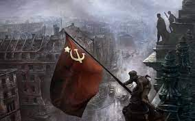
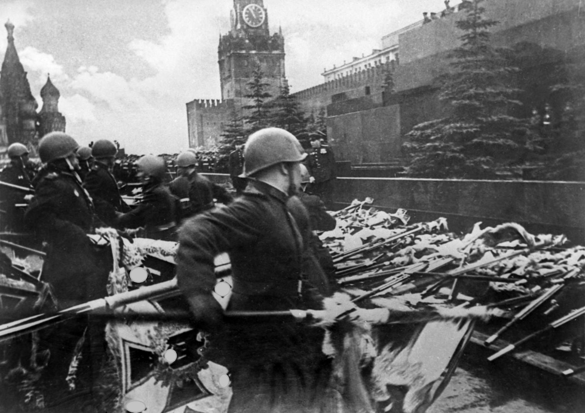

История
Второй мировой войны

Втора́я мирова́я война́(1 сентября 1939 — 2 сентября 1945) — война двух мировых военно-политических коалиций, ставшая крупнейшим вооружённым конфликтом в истории человечества. В ней участвовали 62 государства из 74 существовавших на тот момент (80 % населения Земного шара). Боевые действия велись на территории Европы, Азии и Африки и в водах всех океанов. Это единственный конфликт, в котором было применено ядерное оружие. В результате войны погибло более 70 миллионов человек, из которых большинство — мирные жители. Основная статья: Участники Второй мировой войны Число участвовавших стран менялось в течение войны. Некоторые из них вели активные военные действия, другие помогали Союзникам поставками продовольствия, а многие участвовали в войне только номинально. В антигитлеровскую коалицию входили[25]: Польша, Великобритания (и её доминионы: Канада, Индия, Южно-Африканский Союз, Австралия, Новая Зеландия), Франция, Непал — вступили в войну в сентябре 1939 года; Эфиопия — эфиопские войска под командованием правительства Эфиопии в изгнании продолжили партизанские боевые действия после аннексии государства в 1936 году, официально признана союзником 12 июля 1940 года; Дания, Норвегия — 9 апреля 1940 года; Бельгия, Нидерланды, Люксембург — с 10 мая 1940 года; Греция — 28 октября 1940 года; Югославия — 6 апреля 1941 года; СССР, Тува, Монголия — 22 июня 1941 года; США, Филиппины, Гондурас — с декабря 1941 года; Китай (правительство Чан Кайши) — вёл боевые действия против Японии с 7 июля 1937 года, официально признан союзником 9 декабря 1941 года; Мексика — 22 мая 1942 года; Бразилия — 22 августа 1942 года. В течение периода войны странам «оси» также была объявлена война со стороны таких государств, как Панама, Коста-Рика, Доминиканская Республика, Сальвадор, Гаити, Никарагуа, Гватемала, Куба, Аргентина, Чили, Перу, Колумбия, Иран, Албания, Парагвай, Эквадор, Турция, Уругвай, Венесуэла, Ливан, Саудовская Аравия, Либерия, Боливия, однако в боевых действиях эти государства участия не принимали, а номинальное объявление войны было сделано многими из них только на самом заключительном её этапе, в период с апреля по 9 мая 1945 года. В ходе войны к коалиции присоединились некоторые государства, вышедшие из нацистского блока: Ирак — 17 января 1943 года; Королевство Италия — 13 октября 1943 года; Румыния — 23 августа 1944 года; Болгария — 5 сентября 1944 года; Финляндия — 19 сентября 1944 года. С другой стороны в войне участвовали страны «оси» и их союзники: Германия, Словакия — 1 сентября 1939 года; Италия, Албания — 10 июня 1940 года; Венгрия — 11 апреля 1941 года; Ирак — 1 мая 1941 года; Румыния, Хорватия, Финляндия — июнь 1941 года; Япония, Маньчжоу-го — 7 декабря 1941 года; Болгария — 13 декабря 1941 года; Таиланд — 25 января 1942 года; Китай (правительство Ван Цзинвэя) — 9 января 1943 года; Бирма — 1 августа 1943 года; Филиппины — сентябрь 1944 года. Также не входил в нацистский блок Иран (до 1941 г.). На территории оккупированных стран создавались марионеточные государства, не являвшиеся по смыслу участниками Второй мировой войны и присоединявшиеся к фашистской коалиции: Вишистская Франция, Греческое государство, Итальянская социальная республика, Венгрия, Сербия, Черногория, Македония, Пиндско-Мегленское княжество, Мэнцзян, Бирма, Филиппины, Вьетнам, Камбоджа, Лаос, Азад Хинд, режим Ван Цзинвэя. В ряде германских рейхскомиссариатов были созданы автономные марионеточные правительства: режим Квислинга в Норвегии, режим Мюссерта в Нидерландах, Белорусская центральная рада в Белоруссии. На стороне Германии и Японии сражалось также множество коллаборационистских воинских формирований, созданных из граждан противоборствующей стороны: РОА, иностранные дивизии СС (русская, украинская, белорусская, эстонская, 2 латышские, норвежско-датская, 2 нидерландские, 2 бельгийские, 2 боснийские, французская, албанская), ряд иностранных легионов. Также в вооружённых силах стран нацистского блока сражались добровольческие силы государств, формально остававшихся нейтральными: Испании (Голубая дивизия), Швеции и Португалии. 